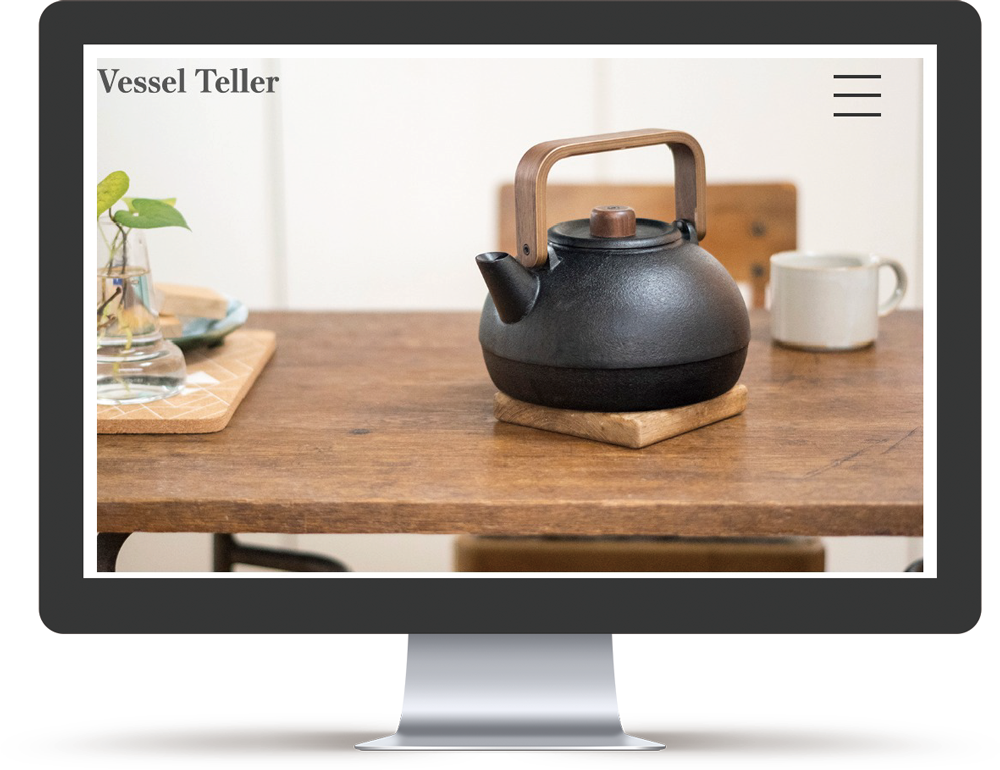
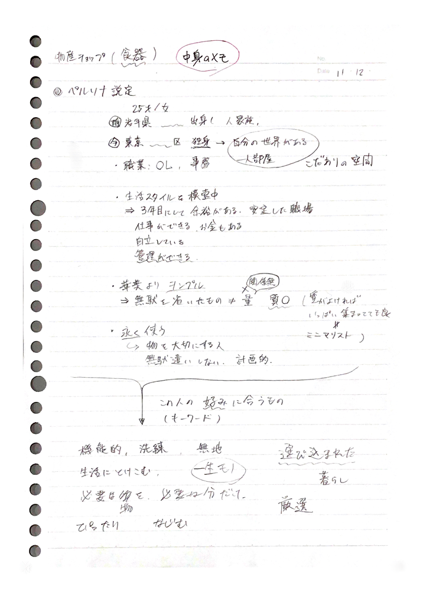
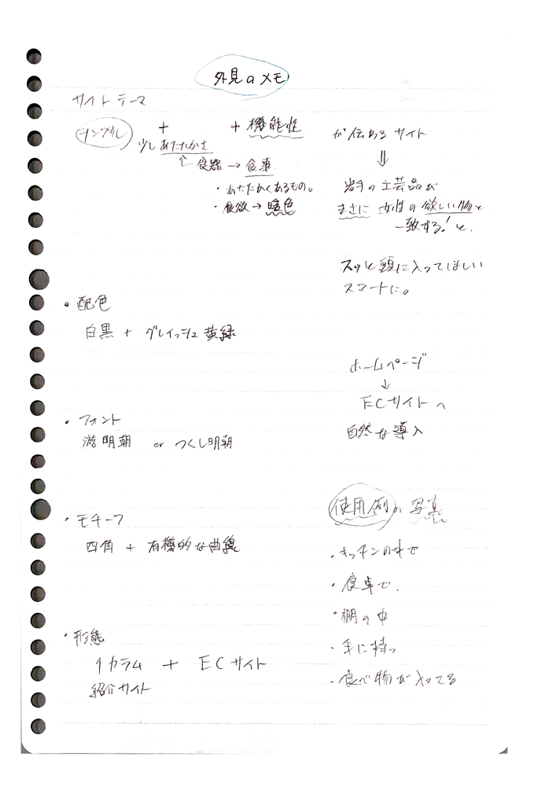
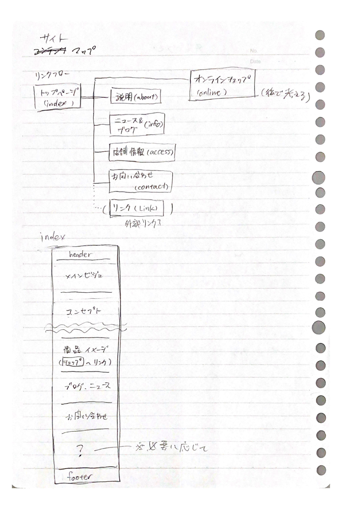
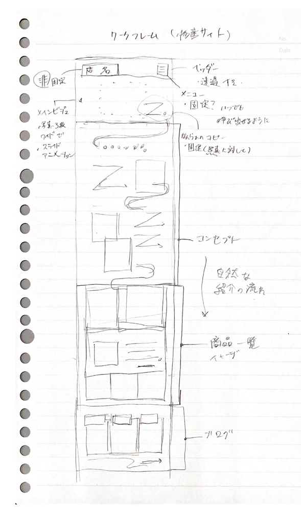
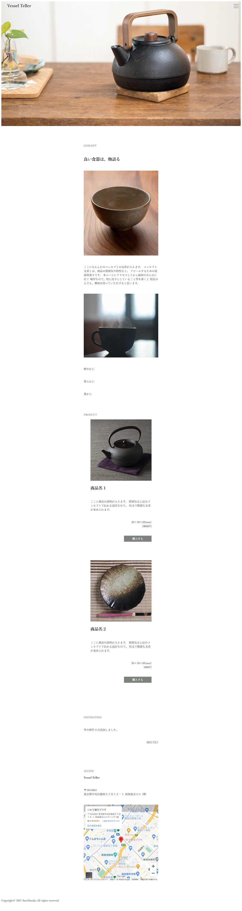

架空の物産ショップサイト
「Vessel Teller」
1学年
製品デザイン基礎実習II


- 課題目標
- 地域を盛り上げるための架空の物産ショップの広告・販売サイトのデザイン制作
- ターゲット
- 東京都在住（岩手県出身）の若い女性(25歳)
- コンセプト
- あたたかみのあるシンプルさで、機能性を伝えるwebサイト
岩手県の鉄器や漆器といった工芸品が、現在の生活スタイルの変化により伸び悩んでいる中、若者向けに新たな展開を要している。そういった背景のもと、若い女性というペルソナに沿い、工芸品に魅力を感じてもらえるような広告・販売サイトを制作しました。
制作過程
1.制作要件から言語化
制作要件
- 岩手県の伝統工芸品が、現代の生活の変化により販売が伸び悩む中、新しい販路拡大のために販促ツールの提案をする。
- キーワードは「欧州」もしくは「若者」
- 物産の中でも、「食器」を主に取り上げる
- 「岩手と欧州の食器」を持続性の高い商品として提案することで、若者への「もの」への興味を引き出すことで自信のライフスタイル確立の手助けを行う。
ターゲット（ペルソナ）
- 25歳・女性
- 岩手県出身で、現在は東京都で働く社会人である
- 自分の生活スタイルを模索中
- 華美なものよりシンプルなものを好み、良いものを永く使いたい
- 多く買うことはできないが、好みに合うものを少しづつ集めている
これらの制作要件とペルソナから、キーワードを連想し、要望に沿ったイメージづくりを行いました。

2.情報設計
1.で言語化されたキーワードからWebサイトの機能や外観の設計をします。
今回のペルソナにピンポイントで魅力が伝わるように、全体的にシンプルな情報量と配色に設定しました。


3.モックアップ制作
2.のサイト設計から、ワークフレームを紙面上に起こします。

この図面を基にXDでモックアップ（下図▼）を作成しました。
スマホファーストのレスポンシブ対応で制作するため、スマートフォン版のモックアップをベースとして作りました。
4.コーディング
モックアップのイメージを基にコーディングでWebサイトとして実装しました。今回はスムーズな制作を意識し、コーディングの中で写真を挿入したり、配色を確認しながら制作を進めました。
5.プレゼンテーション
Webサイト完成後、今回の制作過程と制作物の紹介のプレゼンテーションを行いました。
講評では、
- Webサイトの本文のフォントが横書きの明朝体だと可読性が低くなる。 かといって複数のフォントを使うと統一感の低下からメッセージ性も分散される。用途に適したフォント選びを心がけること。
- ターゲットが制作物に行き着く方法の想定を十分に行わなければ制作の意味がない
- 自分で意図を持って作ったつもりでも、勘違いや強い主観によって見当違いのものになることがあるので、制作の各段階で他者に見てもらい、意見をもらいながら制作すること
といった助言をいただきました。今回は、制作期間が2週間半という中で、効率を意識した制作を行いました。
また、初めてのコーディング実装であり、不慣れでありながら、モックアップが途中のまま実装に移ってしまったことや、最初の段階でペルソナ像の設定に時間がかかってしまったことなど反省点が浮き上がりました。
より効率的に行うために、情報設計に対応できる理解度の向上や、モックアップを早い段階で作り、他者に確認してもらう時間を取ることなどを今後改めて制作に活かせるようにしたいと思いました。
ポイント

ターゲットのペルソナ像に合わせ、必要以上の装飾を避け、商品自体の良さが引き立つようにシンプルなレイアウトにまとめました。
また、コンセプトの「物語」のイメージが持てるように、文学本によく使用される明朝体をフォントに選びました。